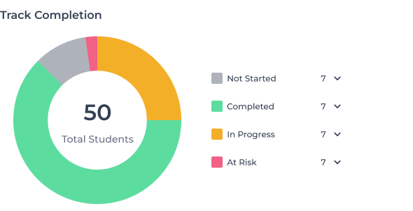

<div class="w-full">
  <div class="flex items-center justify-between">
    <div class="font-semibold text-[#344054] text-[24px]">Graduation Track</div>

    <button nz-button nzType="default" class="rounded w-[40px] h-[40px] border border-[#EAEDF2]">
      <span nz-icon nzType="more"></span>
    </button>
  </div>

  <div class="flex gap-5 mt-5 items-center">
    <div class="w-[50%]">
        <!-- TODO implement chart -->
        
    </div>

    <div class="w-[50%]">
      <div class="flex flex-wrap gap-5">
        @for(info of gradTrack;track $index){
        <div class="border border-[#EAEDF2] rounded-lg p-5 w-[285px] h-[141px] grow">
          <div class="text-[32px] text-[#344054] font-semibold">
            {{ info.data }}
          </div>
          <div class="text-[16px] text-[#667085] font-medium mt-4">
            {{ info.title }}
          </div>
        </div>
        }
      </div>
    </div>
  </div>
</div>
